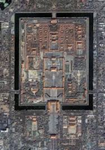
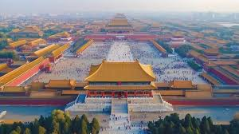
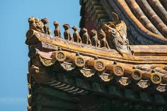
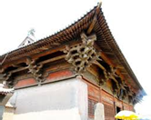

Seluruh kompleks Kota Terlarang dibangun mengikuti aturan Poros Tengah Simetris. Semua bangunan utama berdiri sejajar di satu garis lurus dari selatan ke utara, melambangkan posisi Kaisar sebagai pusat alam semesta yang stabil.


Warna istana ini memiliki filosofi mendalam. Dinding dicat merah sebagai simbol kebahagiaan dan keberuntungan, sedangkan atap menggunakan genteng kaca kuning yang merupakan warna eksklusif kekaisaran untuk melambangkan kekuasaan tertinggi.
Di setiap ujung atap, terdapat deretan Patung Hewan Penjaga mistis. Selain berfungsi sebagai penolak bala, jumlah patung ini menunjukkan tingkat pentingnya bangunan tersebut. Aula paling sakral memiliki jumlah patung paling banyak (10 patung).


Hebatnya, seluruh paviliun raksasa di sini dibangun tanpa menggunakan satu pun paku logam. Para arsitek kuno menggunakan teknik kuncian kayu tradisional (dougong) yang fleksibel, sehingga bangunan ini terbukti tahan terhadap ratusan gempa bumi selama berabad-abad.